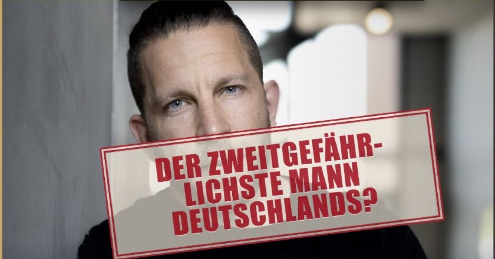

KI-Satire
KI-Satire
Deutschland
Frau verliert gegen blau, au!
Die AfD wird stärkste Kraft, obwohl Manuela Schwesigs Wahlkampf sogar einen Reim enthielt.
Zur ganzen Meldung ↗Nachrichten · Satire · Sauerei
KI-Satire
Die AfD wird stärkste Kraft, obwohl Manuela Schwesigs Wahlkampf sogar einen Reim enthielt.
Zur ganzen Meldung ↗Politische Satire, fast so witzig wie Politiker. Aber gratis.
Unabhängig · unvernünftig · unerhört
Lesen, ausprobieren, ansehen.
Politische Sprüche. Direkt in Klartext übersetzt.
Übersetzer ausprobieren →

Knopf drücken. Ben stempeln. Originalwortlaut prüfen.
Ausprobieren →
Dieselben Floskeln nach jedem Anschlag. Zieh den Hebel – alle Zitate sind belegt.
Phrasen dreschen →
Der „anonyme Insider“ aus dem Kanzleramt. Natürlich verfremdet.
Ansehen →